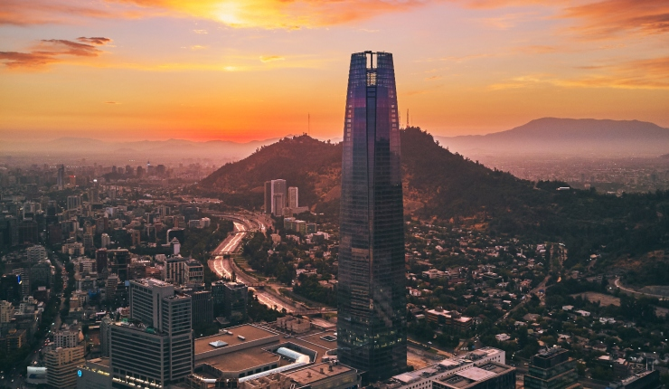

Costanera Center em Santiago: vale a pena visitar?
Quem está planejando uma viagem para a capital chilena quase sempre esbarra com o mesmo nome em algum momento do roteiro: Costanera Center em Santiago. Seja pelas compras, pela localização, pela estrutura ou pelo famoso Sky Costanera, esse é um dos lugares mais visitados da cidade.
Mas afinal, será que realmente vale a pena incluir o Costanera Center no roteiro? A resposta é sim. Principalmente para quem quer conhecer uma Santiago mais moderna, prática e com várias opções no mesmo lugar.
O Costanera Center não é apenas um shopping. Ele se transformou em um dos grandes sÃmbolos da cidade e atrai tanto turistas quanto moradores locais. É aquele tipo de lugar que funciona bem para um passeio rápido, para um almoço, para compras ou até para ver Santiago do alto e entender melhor o tamanho da cidade.
O que fazer no Costanera Center
Muita gente pensa que visitar o Costanera Center em Santiago significa apenas ir às compras, mas a verdade é que o lugar oferece bem mais do que isso.
Você pode passear pelas lojas, conhecer marcas internacionais, fazer uma pausa para tomar um café, almoçar, jantar ou simplesmente aproveitar a estrutura moderna do shopping. Para quem gosta de praticidade, esse é um passeio fácil de encaixar no dia, especialmente porque reúne várias opções em um só lugar.
Além disso, o grande destaque da visita está no Sky Costanera, o mirante que fica no topo da torre e oferece uma das vistas mais bonitas de Santiago. Para muita gente, é justamente essa experiência que faz o passeio valer ainda mais a pena.
Sky Costanera: o ponto alto da visita
Se existe uma atração que faz o Costanera Center em Santiago se destacar ainda mais, é o Sky Costanera. O mirante é um dos mais famosos do Chile e oferece uma vista panorâmica impressionante da cidade, com a Cordilheira dos Andes ao fundo em dias de céu limpo.
É aquele tipo de experiência que mistura turismo, contemplação e fotos lindas. Para quem está visitando Santiago pela primeira vez, subir ao Sky Costanera é uma maneira incrÃvel de ter uma noção da cidade e ver como ela é cercada por montanhas.
Se você gosta de mirantes, paisagens urbanas e lugares que realmente marcam a viagem, esse é um dos pontos mais interessantes da capital chilena.
Vale a pena visitar o Costanera Center?
Sim, vale a pena visitar o Costanera Center em Santiago, especialmente se você quer unir passeio, conforto e boa localização.
O lugar é uma ótima escolha para quem gosta de shopping, quer conhecer o famoso Sky Costanera ou simplesmente quer incluir no roteiro um ponto turÃstico moderno e fácil de acessar. Também é uma boa opção para dias em que você quer um passeio mais leve, sem grandes deslocamentos ou complicações.
Outro ponto positivo é que o Costanera costuma agradar diferentes perfis de viajantes. Quem gosta de compras aproveita as lojas. Quem gosta de boa vista sobe ao mirante. Quem quer apenas comer bem ou descansar um pouco durante o dia também encontra boas opções por lá.
Como chegar ao Costanera Center
Uma das grandes vantagens do Costanera Center em Santiago é justamente a sua localização. O complexo está em uma região moderna e muito bem conectada, o que facilita bastante a visita.
Por isso, ele acaba sendo um lugar prático para incluir no roteiro, mesmo para quem tem poucos dias na cidade. É o tipo de passeio que não exige grande planejamento e que pode ser combinado com outras atrações da região no mesmo dia.
Essa facilidade faz com que muita gente escolha o Costanera não só como atração turÃstica, mas também como ponto de apoio durante a viagem.
Costanera Center é só para compras?
Não. Essa é uma dúvida comum, mas o Costanera Center vai muito além das compras. Claro que ele é um dos principais pontos de shopping em Santiago, mas o local também funciona como espaço de lazer, gastronomia e turismo.
Muitos visitantes vão até lá sem a intenção de comprar nada e ainda assim aproveitam bastante o passeio. Isso acontece porque o lugar é confortável, bonito, bem localizado e ainda oferece uma das atrações mais buscadas da cidade: o Sky Costanera.
Conclusão
Se você está montando seu roteiro e quer saber o que visitar em Santiago, o Costanera Center em Santiago merece, sim, entrar na lista.
Ele vale a pena porque reúne praticidade, boa estrutura, compras, gastronomia e uma das vistas mais famosas da cidade. Para alguns viajantes, será uma parada estratégica. Para outros, será um dos momentos mais legais da viagem. E para muitos, será aquele lugar que ajuda a mostrar o lado mais moderno e vibrante de Santiago.
Seja para passear, fazer compras, comer ou subir ao Sky Costanera, o Costanera Center é um dos pontos mais completos e conhecidos da capital chilena.
Quer economizar no seu roteiro em Santiago?
O Descola Chile te ajuda a pagar menos e escolher melhor com descontos, beneficios e suporte em português.